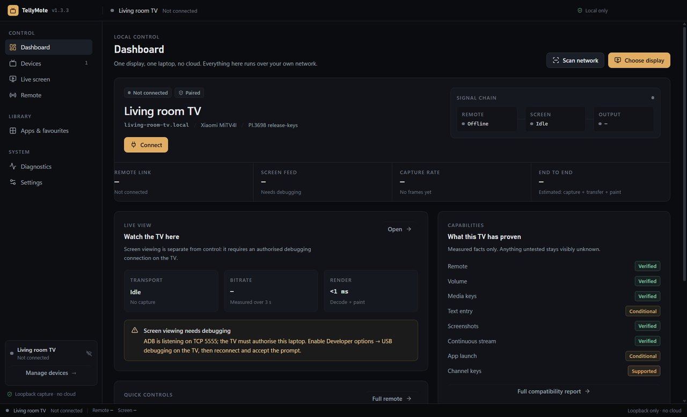
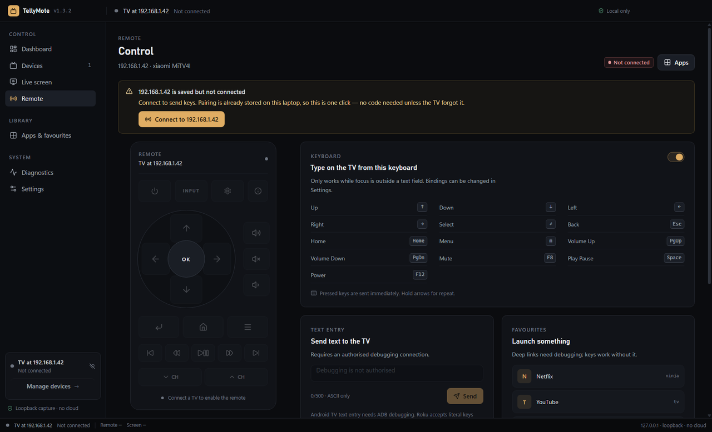

Android TV Remote v2
Native pairing with the six-character code the TV shows, then authenticated key events.
Local network · no account
A remote and live screen viewer for Android TV, Google TV and Roku. Everything runs on your own network — no account, no cloud relay, no telemetry.

01Remote
Arrow keys move. Enter selects. Hold an arrow and it repeats, like the plastic remote.
Page Up and Down for volume, Space for play/pause, F8 to mute. Every binding is editable.
Type a YouTube search on a real keyboard instead of hunting letters on a grid.

02Live screen
Capture needs ADB debugging enabled on the TV. DRM apps render black — that is the DRM, not a bug.
03Protocols
No platform-tools, no vendor app, no account. TellyMote speaks the protocols the devices already expose on your network.
Native pairing with the six-character code the TV shows, then authenticated key events.
Implemented in-app, so there is nothing to install. Unlocks text entry, the app list and capture.
Remote keys, app launch and literal text over HTTP. Roku exposes no capture endpoint.
04Compare
| Tool | Control from PC | Live screen | Developer mode | Account |
|---|---|---|---|---|
| TellyMote | Yes — D-pad, volume, media keys | Yes, over authorised ADB | Only for text, apps and capture | None |
| scrcpy | Yes, with the mirror | Yes, lowest latency | Required | None |
| Google TV app | Phone only | No | No | Google account |
Full comparison, including Yatse and Unified Remote, on the alternatives page.
No sign-up · no relay
Free for non-competing use. Windows installer and a no-install portable ZIP; macOS and Linux builds come from CI.
Unsigned build · SHA-256 in every release · 8.5 MB promo video on the download page